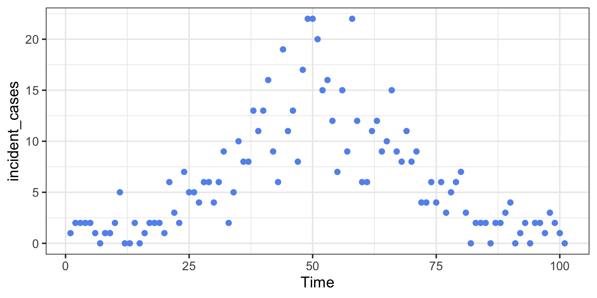

This package uses Poisson likelihood with trend filtering penalty (a type of regularized nonparametric regression) to estimate the effective reproductive number, Rt. This value roughly says “how many new infections will result from each new infection today”. Values larger than 1 indicate that an epidemic is growing while those less than 1 indicate decline.
Installation
You can install the development version of rtestim from GitHub with:
# install.packages("remotes")
remotes::install_github("dajmcdon/rtestim")Quick example
Here we create some data that “looks” like a typical wave in an epidemic. Because the model uses regularized regression, we estimate the model at a range of tuning parameters simultaneously.
set.seed(12345)
library(rtestim)
library(ggplot2)
dat <- data.frame(
Time = 1:101,
incident_cases = c(1, rpois(100, dnorm(1:100, 50, 15) * 500 + 1))
)
ggplot(dat, aes(Time, incident_cases)) +
geom_point(colour = "cornflowerblue") +
theme_bw()
We fit the model and visualize the resulting estimated sequences of Rt:
mod <- estimate_rt(observed_counts = dat$incident_cases, nsol = 20)
plot(mod)
The additional parameter nsol = 20 specifies the number of λs for which Rt is estimated.
A built in function for cross-validation can be used to select the tuning parameter.
mod_cv <- cv_estimate_rt(dat$incident_cases, nsol = 20)
plot(mod_cv, which_lambda = 'lambda.1se')